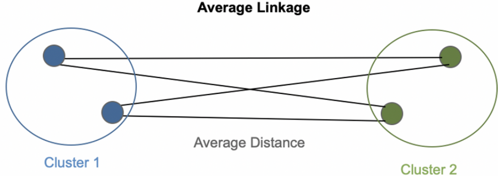

5 Unsupervised classification
The objective of unsupervised classification is to determine the \(K\) classes \(\mathcal{P}_{K} = {C_1,··· ,C_K}\) of the n individuals of X such that a class is a grouping of individuals :
similar to each other (homogeneity in the class)
different from individuals in other classes (well-separated classes)
Question
How to automatically define groups of individuals or variables that are similar ?
There are many automatic clustering algorithms that are distinguished by :
the nature of the objects to be clustered : individuals or variables
the nature of the data : quantitative, qualitative or mixed
the nature of the classification structure : partition or hierarchy
the nature of the approach used : geometric approach (distance, dissimilarity, similarity) or probabilistic approach (mixture models)
Note
Here, we are interested in the classification of individuals described by quantitative data, using geometric approaches using distances.
We have a set of points of \(R_p\) (data) for which we do not know the labels, but that we want to group together in an “intelligent” way.
| X1 | X2 | |
|---|---|---|
| Brigitte | 140 | 6.0 |
| Marie | 85 | 5.9 |
| Vincent | 135 | 6.1 |
| Alex | 145 | 5.8 |
| Manue | 130 | 5.4 |
| Fred | 145 | 5.0 |
5.1 Partition
Definition
A partition \(\mathcal{P}\) into \(K\) classes of individuals is a set of non-empty classes, two by two disjoint and whose union is the set of individuals:
\[\begin{align*} C_k &\ne \emptyset, \quad \forall k \in \{1, \dots, K\} \\ C_k \cap C_{k'} &= \emptyset, \quad \forall k, k' \in \{1, \dots, K\} \\ C_1 \cup \cdots \cup C_K &= \Omega \end{align*}\]For the example \(\Omega = \{Brigitte, Marie, Vincent, Alex, Manue, Fred\}\), I proposed a partition \(\mathcal{P}^3 = \{C1,C2,C3\}\) into 3 classes of the 6 individuals below.
\(C1 = \{Marie, Brigitte\}\)
\(C2 = \{Alex, Vincent\}\)
\(C3 = \{Manue, Fred\}\)
5.2 Hierachy
Definition
A hierarchy H of a set of parts \(\mathcal{X} = \{x_1,...,x_n\}\) satisfying:
\(\forall i \in [1,n], \{x_i\} \in H\)
\(\mathcal{X} \in \mathcal{H}\)
\(\forall A, B \in \mathcal{H}, A \cap B = \emptyset \: or A \subset B \: or B \subset A\)
A dendrogram (or hierarchical tree) is the graphical representation of an indexed hierarchy and the function h measures the height of the classes in this dendrogram.
\(\mathcal{H} = \{ \{Brigitte\}, \{Marie\}, \{Vincent\}, \{Alex\}, \{Manue\}, \{Fred\},\)
\(\{Alex,Fred\},\{Brigitte,Vincent\},\{Brigitte,Vincent,Manue\},\)
\(\{Brigitte, Marie, Vincent, Alex, Manue, Fred\} \}\)
By defining a cut level, we will obtain a partition.
\(\mathcal{P} = \{ \{Marie\},\{Alex,Fred\}, \{Manue\}, \{Brigitte\} ,\{Vincent\} \}\)
\(\mathcal{P} = \{ \{Marie\},\{Alex,Fred\}, \{Manue\}, \{Brigitte,Vincent\} \}\)
\(\mathcal{P} = \{ \{Marie\},\{Alex,Fred\}, \{Manue,Brigitte,Vincent\} \}\)
\(\mathcal{P} = \{ \{Marie, Alex,Fred\}, \{Manue,Brigitte,Vincent\} \}\)
Dendrogram
5.3 How to measure the distance between individuals ?
Clustering methods require the ability to quantify the dissimilarity between the observations.
5.3.1 Binary data
For binary data (i.e. vectors composed of 0 and 1), we construct the cross-table between two individuals \(i\) and \(i′\) :
\(I_1\) = {1,0,0,1,1,1,0,0}
\(I_2\) = {0,1,0,1,1,1,1,0}
| 1 | 0 | individual i’ | ||
|---|---|---|---|---|
| individual i | 1 | a | b | |
| 0 | c | d |
There are then several normalized similarity indices (\(s_{max} = 1\)):
Jaccard \(\frac{a}{a+b+c}\)
Russel and Rao \(\frac{a}{2a+b+c+d}\)
Dice or Czekanowski \(\frac{2a}{2a+b+c}\)
Ochiai \(\frac{a}{\sqrt{a+b} + \sqrt{a+c}}\)
A dissimilarity index:
\[ d(i,i') = s_{max} - s(i,i') \]
5.3.2 Quantitative data
For quantitative data x and y of \(\mathcal{R}^P\):
simple Euclidean distance :
\[d^2(x,y)=\sum\nolimits_{j=1}^{p}(x_j - y_j)^2\]
normalized Euclidean distance :
\[d^2(x,y)=\sum\nolimits_{j=1}^{p}\frac{1}{s^2_j}(x_j - y_j)^2\] where \(s^2_j = \frac{1}{n}\sum\nolimits_{i=1}^{n}(x_ij-x^{-j})^2\) and \(x^{-j} = \frac{1}{n}\sum\nolimits_{i=1}^{n}x_{ij}\)
city-block or Manhattan distance:
\[d(x,y) = \sum\nolimits_{j}^{}|x_j-y_j|\]
Chebyshev or max distance :
\[d(x,y) = max_{j}|x_j-y_j|\]
Note
In general, we use the simple Euclidean distance when all the variables have the same measurement scale
In the case of measurement scales that are too different, it is preferable to use the normalized Euclidean distance in order to give the same importance to all the variables.
5.4 How to measure the distance between classes ?
5.4.1 Linkage function
Minimum link
\[ D(C_k,C_{k'}) = \min_{x \in C_k,x' \in C_k'} d(x,x') \]
Minimal spanning tree:
Classes with very different diameters
Chaining effect: tendency to aggregate rather than create new classes
Sensitivity to noisy individuals
Miximal link
\[ D(C_k,C_{k'}) = \max_{x \in C_k,x' \in C_k'} d(x,x') \]
Creates compact classes (diameter control): this fusion generates the smallest increase in diameters:
- Sensitivity to noisy individuals
The average link
\[ D(C_k,C_{k'}) = \frac {1}{|C_k||C_{k'}|}\sum_{x \in C_k}^{}\sum_{x' \in C_{k'}}^{}d(x,x') \]

Trade-off between minimal and maximal links : good balance between class separation and class diameter diameter
Tendency to produce classes of close variance
The Ward’s link
\[ D(C_k,C_{k'}) = \frac {|C_k|+|C_{k'}|}{|C_k||C_{k'}|}d(\mu_k,\mu_{k'})^2 \]
where \(\mu_k,\mu_{k'}\) are gravity centers of \(C_k,C_{k'}\)
Tendency to build classes of the same size for a given level of hierarchy.
Groups classes with close barycenters
Breaks the chain effect of the minimum link
5.5 How to evaluate the quality of a partition ?
A good partition into K classes has classes:
homogeneous : individuals in the same class are similar,
separate : individuals from two different classes are not similar.
The cohesion of the classes of a partition can be measured by the largest diameter.

The separation of the classes of a partition can be measured by the smallest minimum link.
We consider a partition \(\mathcal{P}_K = {C_1,··· ,C_K}\) in \(K\) classes. We assume here that the data are quantitative and that the weight of the individuals is \(\frac{1}{n}\).
We note \(\mu\) the center of gravity of the point cloud
\[\mu = \frac{1}{n}\sum\nolimits_{i=1}^{n} x_i\]
and for each class k, \(\mu_k\) the center of gravity of the class \(k\)
\[\mu_k = \frac{1}{|C_k|}\sum_{i \in C_k}^{} x_i, for\ all\ k \in K\]
Note
Total inertia (independent of the partition) = total variance
\[I_{Tot} = \sum_{i = 1}^{n} d(\mu,x_i)^2 = I_{Inter} + I_{Intra}\]
Inter-class inertia = variance of the class centers
\[I_{Inter} = \sum_{k = 1}^{K} |C_k| d(\mu,\mu_k)^2\]
Intra-class inertia = variance of points in the same class
\[I_{Intra} = \sum_{k = 1}^{K}\sum_{i \in C_k}^{} d(\mu,x_i)^2\]
To obtain a good partitioning, it is therefore appropriate to both :
minimize the intra-class inertia to obtain the most homogeneous clusters possible
maximize the inter-class inertia to obtain well-differentiated subsets